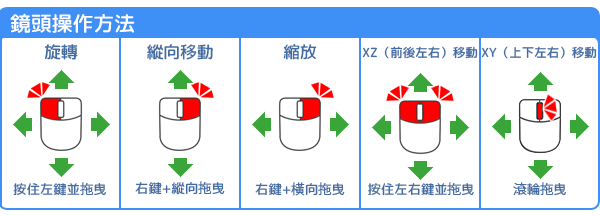
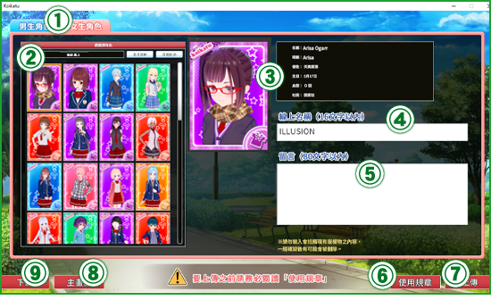

前言
首先非常感謝您購買Windows7/8.1/10專用軟體「Koikatsu Party」。開始遊戲前，建議您先詳讀「玩家指南」以利遊戲順利進行。
・基本操作 : 以下是本遊戲在Windows系統中的基本操作說明。
(1)按左鍵 : 請按下滑鼠左鍵。
(2)按住左鍵並拖曳 : 請按住滑鼠左鍵，並移動滑鼠。
在本玩家指南中，若出現「請選譯〇〇〇」的表現方式，煩請您依照指示將滑鼠移動到「〇〇〇」上方，並按下滑鼠左鍵。
（例：若說明文中出現「請選擇決定按鈕」，即請將游標移動至「決定按鈕」上方，並按下滑鼠左鍵。）
※在某些情況下，可能會要求您在電腦上進行複製／移動／刪除檔案等的操作。
若您不懂如何執行上述的操作，請聯繫您的電腦廠商諮詢相關問題。
・基本操作 : 以下是本遊戲在Windows系統中的基本操作說明。
(1)按左鍵 : 請按下滑鼠左鍵。
(2)按住左鍵並拖曳 : 請按住滑鼠左鍵，並移動滑鼠。
在本玩家指南中，若出現「請選譯〇〇〇」的表現方式，煩請您依照指示將滑鼠移動到「〇〇〇」上方，並按下滑鼠左鍵。
（例：若說明文中出現「請選擇決定按鈕」，即請將游標移動至「決定按鈕」上方，並按下滑鼠左鍵。）
※在某些情況下，可能會要求您在電腦上進行複製／移動／刪除檔案等的操作。
若您不懂如何執行上述的操作，請聯繫您的電腦廠商諮詢相關問題。
使用條款
在您遊玩「Koikatsu Party」前，請務必閱讀以下條款。
建議您定期備份硬碟中的資料及遊戲，另遊戲時請保持理性謹慎而行。
●本遊戲中所有內容、情節皆屬虛構。
遊戲中所登場之人物名稱、組織名稱、地名、商品名稱、事件及時代背景、職業等皆為虛構，如有雷同實屬巧合。
另外，本遊戲因內容涉及不雅情節，禁止未滿18歲者購買、遊玩及觀賞。
遊戲中登場的人物皆年滿18歲以上。
此外，本遊戲禁止使用網路與他人共享或上傳、商業租借、轉手販賣，以及類似上述之行為。
●嚴禁網路上傳本遊戲影片及轉載遊戲截圖等違反著作權之行為。
●本遊戲部分內容涉及暴力、殘酷及抵觸法律等過度表現，切勿在現實生活中模仿。
遊戲中所有行為是在雙方合意下進行之演技並純屬虛構。若在現實生活中模仿並實行該行為，將可能會遭逮補並受到法律嚴厲制裁。
●長時間遊戲時，為了您的健康，建議您每1～2小時休息10～15分鐘。
●請注意不要刮傷及沾汙光碟上下表面。
若表面有汙垢時，請以軟布擦拭。另請勿將光碟放置於靠近暖爐之高溫處、陽光直射處、以及潮濕處。
●請勿使用任何有損害的光碟。有裂痕或已變形之光碟，或以膠水等膠粘劑修補過之光碟，可能會造成光碟機的損害及故障。
過去看電視或受到強烈刺激時，曾喪失意識或癲癇發作者，請先諮詢醫生後再開始遊玩。
遊玩中若出現上述症狀，請立即停止遊戲，並接受醫生的診斷。
●此光碟為PC專用。若以音響設備讀取此光碟，可能會導致聽力及音響受損，切勿嘗試此危險動作。
※請注意，本站中雖省略了所有©/™標示，但各項產品名稱均已版權登記或申請商標。
免責事項
●若因使用本產品而發生任何糾紛、損失和損害，敝司概不承擔任何責任。建議您定期備份硬碟中的資料及遊戲，另遊戲時請保持理性謹慎而行。
●本遊戲中所有內容、情節皆屬虛構。
遊戲中所登場之人物名稱、組織名稱、地名、商品名稱、事件及時代背景、職業等皆為虛構，如有雷同實屬巧合。
另外，本遊戲因內容涉及不雅情節，禁止未滿18歲者購買、遊玩及觀賞。
遊戲中登場的人物皆年滿18歲以上。
禁止事項
●未經授權之狀況下，任意複製或改造本遊戲軟體、遊戲資料及玩家指南等任何內容，皆屬違法行為。此外，本遊戲禁止使用網路與他人共享或上傳、商業租借、轉手販賣，以及類似上述之行為。
●嚴禁網路上傳本遊戲影片及轉載遊戲截圖等違反著作權之行為。
●本遊戲部分內容涉及暴力、殘酷及抵觸法律等過度表現，切勿在現實生活中模仿。
遊戲中所有行為是在雙方合意下進行之演技並純屬虛構。若在現實生活中模仿並實行該行為，將可能會遭逮補並受到法律嚴厲制裁。
注意事項
●請勿過度靠近螢幕。●長時間遊戲時，為了您的健康，建議您每1～2小時休息10～15分鐘。
●請注意不要刮傷及沾汙光碟上下表面。
若表面有汙垢時，請以軟布擦拭。另請勿將光碟放置於靠近暖爐之高溫處、陽光直射處、以及潮濕處。
●請勿使用任何有損害的光碟。有裂痕或已變形之光碟，或以膠水等膠粘劑修補過之光碟，可能會造成光碟機的損害及故障。
警告
●疲勞時或長時間過度遊戲，恐會有礙您的健康，敬請適度休息。過去看電視或受到強烈刺激時，曾喪失意識或癲癇發作者，請先諮詢醫生後再開始遊玩。
遊玩中若出現上述症狀，請立即停止遊戲，並接受醫生的診斷。
●此光碟為PC專用。若以音響設備讀取此光碟，可能會導致聽力及音響受損，切勿嘗試此危險動作。
※請注意，本站中雖省略了所有©/™標示，但各項產品名稱均已版權登記或申請商標。
何謂「Koikatsu Party」？


故事

系統需求
-
- 最低系統需求
- 建議系統需求
- OS
- Windows 7 / 8.1 / 10 64bit*1
- DirectX
- DirectX 11
- CPU
- Intel Core i3 4000 *2
- Intel Core i5 4000 *2
- RAM
- 4GB
- 8GB
- HDD
- 20GB
- GPU
- VRAM 1GB*3 *4
- VRAM 2GB *3
- 輸入裝置
- 附滾輪功能滑鼠、鍵盤、螢幕解析度1280×720以上
-
*1 不支援32 bit 版本。不支援觸控。
*2 建議使用intel CPU。
*3 無法保證使用低於「NVIDIA GeForce 500」、「ATI RADEON HD6000」的顯示卡、以及「Intel HD Graphics 4000 以上」規格外的效能。
「集成顯卡」或「使用系統部分主記憶體」的圖形處理系統，不在我們建議系統需求範圍內。
*4 若VRAM為1GB，則請在遊戲的初始設定畫面中選擇「節能」或「普通」。
※有可能無法支援中古電腦、自行組裝的電腦。
※即使是同樣規格，筆記型電腦的處理速度有可能會劣於桌上型電腦。
※更新驅動程式或新增任何設備的品牌電腦，將無法保證其效能。
承上所述，敝司雖然會盡最大的努力給予協助，但電腦的設備或驅動程式等，與本遊戲發生相容性問題時，仍然無法保證能正常執行，敬請見諒。
・若想了解您的電腦是否合乎系統需求，可諮詢您的電腦廠商。
・所需的硬體容量可能會因系統而異。
・即使您的電腦符合系統需求，遊戲也可能會因驅動程式過舊，而無法正常執行。
・您可自行前往各廠商官網下載最新驅動程式。
若您無可用的網路下載驅動程式，則可能無法正常執行遊戲。
初始設定
啟動位於桌面上的「Koikatsu Party」後，就會跳出「初始設定」視窗。
-
(1) 開始遊戲
可開始遊戲。※將會顯示主畫面。
(2) 閱讀玩家指南 會以新視窗開啟本網站。
(3) 語言 請選擇您的語言。
(4) 螢幕顯示 可以指定螢幕解析度。
(5) 全螢幕顯示 勾選後會以「全螢幕」啟動，無勾選則以「視窗」啟動。 若無法正常顯示「全螢幕」，請設定成「視窗」模式。
(6) 簡易設定・節能可減輕電腦負擔的設定。
・普通速度和品質為中等的設定。
・高效能可對應高規格的設定。
(7) 螢幕 同時使用複數個螢幕時，請選擇欲顯示「全螢幕」遊戲的螢幕。※僅一台螢幕時，請跳過此設定。
(8) 系統資訊 顯示目前所使用的電腦系統資訊。
(9) 開啟安裝資料夾 開啟遊戲安裝後的資料夾。
(10) 結束 結束遊戲。
(11) 開啟角色資料夾 開啟儲存角色資料的資料夾。
玩家資料夾
開啟「Koikatsu Party」的安裝資料夾就會顯示[UserData]資料夾。所有已儲存的遊戲資料都被保存在此。
・[Save] : 各種設定資料被保管在此。
・[Cap] : 利用截圖功能所拍攝的圖片被儲存在此
・[Coordinate] : 在自創角色中所儲存的服裝打扮被保管在此。
・[Chara] : 已儲存的角色資料被保管在此。※玩家資料夾內的「female」和「male」資料夾中，分別保管女性及男性角色的儲存資料。
・[CardFrame] : 攝影模式時所使用的前景和背景的圖片請儲存在此資料夾。※請將前景儲存在「Front」、背景儲存在「Back」資料夾內。
・[bg] : 自創角色時所顯示的背景圖片請儲存在此資料夾。
・[Save] : 各種設定資料被保管在此。
・[Cap] : 利用截圖功能所拍攝的圖片被儲存在此
・[Coordinate] : 在自創角色中所儲存的服裝打扮被保管在此。
・[Chara] : 已儲存的角色資料被保管在此。※玩家資料夾內的「female」和「male」資料夾中，分別保管女性及男性角色的儲存資料。
・[CardFrame] : 攝影模式時所使用的前景和背景的圖片請儲存在此資料夾。※請將前景儲存在「Front」、背景儲存在「Back」資料夾內。
・[bg] : 自創角色時所顯示的背景圖片請儲存在此資料夾。
主畫面
-
(1) 開始
會遷移至「學園編緝畫面」。
(2) 讀取 選擇儲存檔案繼續遊戲。
※會遷移至「讀取畫面」。
(3) 自創角色 可以進行角色的容貌、衣著等設定，以及上傳至官網或下載其他玩家的角色。
・女生角色開始編緝女生角色。
・男生角色開始編緝男生角色。
・上傳可從遊戲將角色「上傳」至官網。
・下載可以下載他人「上傳」的角色。
※使用上傳、下載功能之際，需連接網際網路。
※使用前請務必閱讀上傳網站使用規章。
・下載(SteamSV)可從此下載在安裝更新檔前，經由Koikatsu Party被上傳的角色。
※更新檔安裝前後的上傳位置會不同。
・返回返回前畫面。
(4) 特殊模式 會依遊戲的進行開放特殊的功能。
・自由H可依喜好設定角色、場所、時間點，享受Ｈ場景。
・演唱會可觀賞喜愛角色的個人演唱會。
・事件可回想劇情角色的事件以及變更容貌。
・返回返回前畫面。
(5) 設定 顯示設定。可變更遊戲內的設定。
(6) 離開 結束遊戲。
自創角色
可以設定角色的容貌、衣著等的設定。
-
 -
(1) 主選單 在此欄選擇任一種類，便會於下方「(2) 變更項目」顯示詳細選項。
※由左開始分別是「臉部」、「身體」、「頭髮」、「服裝」、「飾品」、「角色個資」、「儲存／讀取」、「切換BGM」。
※若點選「切換BGM」則會切換ＯＮ／ＯＦＦ。
※在「儲存／讀取」中的「呈現方式」選項為遊戲整體的設定，而非角色單體的設定。
(2) 變更項目 在「(1) 主選單」選擇種類後，其詳細選項會顯示在此。
請以「選擇按鈕」或「移動滑動條」來進行各部位的變更。
※詳細操作請參考臉型及體型的調整、種類與顏色的選擇、飾品。
(3) 確認選單 可變更並確認角色的狀態。
(4) 穿搭類型 可以切換服裝的類型。
會依類型個別儲存服裝和飾品的設定。
(5) 角色檢視 顯示目前自創中的角色。
可利用「鏡頭操作」３６０°任意旋轉。
(6) 名牌 會顯示目前自創中角色的名字。
※角色的名字可在角色個資中進行變更。
(7) 返回 返回前畫面。
臉型及體型的調整（操作滑動條） : 請以移動滑動條的方式，變更臉型及體型。以下是變更體型的參考範例。

-
(1) 在「主選單」中選擇「身體」。
(2) 從「變更項目」中選擇欲調整的部位。
(3) 視窗即會顯示可進行調整的部位與滑動條。
※除手動調整滑動條，也可在右側直接「輸入數值」調整。
※臉型和體型之外的滑動條也是同樣方式操作。
種類與顏色的選擇 : 大多數的項目可變更「種類」和「顏色」。以下是變更前髮種類與顏色的參考範例。
-
(1)
在「主選單」中選擇「頭髮」。
(2) 從「變更項目」中選擇「前髮」。
(3) 視窗顯示前髮用的變更細項後，選擇「前髮的種類」。
(4) 跳出「前髮一覽」的視窗後，選擇欲變更的髮型。
(5) 選擇變更項目「前髮的基本顏色」。
(6) 跳出變更顏色用的視窗後，請選擇「擷取顏色」、「色塊條」、「預設集」 其中一個變更方式，
※部分的服裝及飾品，可以選擇「雙色」。
※請「按下左鍵」或「按住左鍵並拖曳」來選擇顏色。
※點選「滑動條」的數值欄後，就能以鍵盤輸入數值。
※若將游標移到「預設集」的「01～05」下方最右邊的色塊上並「按下左鍵」 就會自動儲存「預覽」中的顏色。
※可以變更「透明度」的項目，則會另顯示「透明度」的滑動條。
衣著設定 : 可進行衣服、內衣、鞋子、襪子的設定。
-
(1)
選擇狀態。
(2) 在「主選單」中選擇「服裝」。
(3) 從「變更項目」中選擇欲設定的部位。
(4) 選擇欲變更的「種類」。
※部分服裝飾品等，可進行細部的顏色變更。
(5) 跳出視窗後，從一覽中選擇衣著。
飾品設定 : 每個角色最多可配置20種飾品，可依喜好變更大小及位置。以下是在頭部配戴眼鏡的參考範例。
-
(1)
在「主選單」中選擇「飾品」。
(2) 選擇任一編號。 ※例：選擇「項目01」。
(3) 選擇變更項目中的「類型」。
(4) 從一覽中選擇「臉」。
(5) 下方即會顯示臉部飾品選項，這時請選「種類」。
(6) 從一覽中選擇欲配載的「眼鏡」。
(7) 選擇「調整01」。
※可以調整細部的飾品，則會另顯示「調整02」。
(8) 跳出調整用項目的視窗後，進行各項目的調整。
※各項目的「Ｘ、Ｙ、Ｚ」除了使用「滑鼠左鍵操作」之外，也可直接「輸入數值」調整。
・位置X：調整左右橫向的位置。
・位置Y：調整上下縱向的位置。
・位置Z：調整前後的位置。
・角度X：縱向旋轉。
・角度Y：橫向旋轉。
・角度Z：順、逆時鐘旋轉。
・縮放X：橫向改變大小。
・縮放Y：縱向改變大小。
・縮放Z：改變大小厚度。
※一旦變更飾品的位置，飾品也會隨之移動。
-
操作軸：可使用操作軸直接進行操作。 -
(1) 顯示操作軸
勾選「顯示操作軸」，飾品上即會顯示出操作軸。
以滑鼠拖曳操作軸，便可移動、旋轉飾品。
(2) 移動／旋轉 可切換操作軸的種類。
(3) 速度／大小 ・速度：設定操作時移動的速度。
・大小：設定操作軸的大小。
移動・(4) 移動方塊可讓目標移動。
・(5) Z方向移動讓目標往Z軸方向移動。
・(6) X方向移動讓目標往X軸方向移動。
・(7) Y方向移動讓目標往Y軸方向移動。
旋轉・(8) Z軸旋轉讓目標順、逆時鐘方向旋轉。
・(9) X軸旋轉讓目標縱向旋轉。
・(10) Y軸旋轉讓目標橫向旋轉。
-
■「複製」：可將已設定完成的飾品，複製到其他穿搭類型中。 -
(1)
飾品編緝完成後，選擇「變更項目」中的「複製」。
(2) 選擇「複製源」的穿搭類型。
(3) 選擇欲複製的飾品。
(4) 選擇「複製目的地」的穿搭類型。
(5) 複製源的飾品就會被複製到該穿搭類型中。
-
■「調換」：可將已設定完成的飾品，複製到其他項目。 -
(1)
飾品編緝完成後，選擇「變更項目」中的「調換」。
(2) 選擇「複製源」的飾品項目。
(3) 選擇「複製目的地」的飾品項目。
(4) 指定複製的選項。
・複製項目將「複製源」的飾品完全複製到「複製目的地」。
・切換左右的位置例如左耳右耳等，有左右「位置」之分的飾品，在勾選此項並「複製項目」後，複製目的地的飾品會切換至相反位置。
・複製調整只複製「複製源」飾品中的調整值。
・左右旋轉後複製只複製「複製源」飾品中，180度旋轉後「旋轉Y軸」的調整值。
・左右旋轉後複製只複製「複製源」飾品中，180度旋轉後「旋轉X軸」的調整值。
※可以調整細部的飾品，則會另顯示「調整02」。
角色個人資料的設定 : 設定角色的名稱、個性、喜好等角色相關資訊。
-
(1)
在「主選單」中選擇「角色個資」。
(2) 選擇「角色」即會顯示設定畫面。
(3) 可以設定角色個資。
衣著的儲存／讀取／刪除 : 可以管理已完成設定的服裝及飾品。
-
(1)
在「主選單」中選擇「儲存／讀取」。
(2) 選擇「服裝的儲存與刪除」後，即會顯示衣著資料的管理畫面。
(3) 視窗為儲存的衣著資料一覽。請選擇欲儲存／刪除的衣著。
(4) 可以變更衣著一覽的排序。
(5) 在此選擇欲執行的項目。
・刪除刪除在一覽中所選擇的衣著。
※請注意不僅遊戲內，此動作會直接刪除儲存於電腦內的資料。
・另存新檔儲存目前角色檢視中的衣著。
※儲存之際會顯示名稱輸入欄。※儲存完畢後會新增至一覽中。
・覆蓋檔案一覽中所選擇的衣著資料，會被目前角色檢視中的衣著取代。
-
讀取 : 可從衣著資料一覽中選擇並讀取項目。 -
(1)
在「主選單」中選擇「儲存／讀取」。
(2) 選擇「讀取服裝」即會顯示讀取畫面。
(3) 從已儲存的衣著資料一覽中，選擇欲讀取的衣著。
(4) 可以變更衣著一覽的排序。
(5) 可以選擇欲讀取的項目。
(6) 執行讀取所選衣著的資訊。
※請注意，未儲存的資訊將會遺失。
儲存新角色 : 在執行新角色的儲存時，會要求製作使用於角色儲存資料的預覽照片。
-
(1)
在「主選單」中選擇「儲存／讀取」。
(2) 選擇「角色的儲存與刪除」後，即會顯示角色資料的管理畫面。
(3) 一旦選擇「另存新檔」，就會切換至攝影模式。
(4) 製作「學生證照片（使用於遊戲本篇中）」。
將角色的位置／角度調整至紅線內。
(5) 設定表情、站姿。
(6) 拍攝「學生證照片」。
拍攝完成的照片，可至畫面左側的「學生證照片」中確認。
(7) 製作角色儲存資料用的預覽照片。
選擇「拍攝卡片照片」。
(8) 將角色的位置／角度調整至框內。
(9) 設定表情、站姿。
(10) 執行拍攝卡片照片。
拍攝的照片，可至畫面左側的「卡片照片」中確認。
(11) 可確認拍攝的照片。
(12) 將會以拍攝的照片製作角色儲存資料。
※拍攝的照片在儲存完畢後，會新增至角色資料一覽中。
角色的覆蓋儲存／刪除 : 在執行角色覆蓋儲存之際，可以選擇是否要重新製作預覽照片。
-
(1)
在「主選單」中選擇「儲存／讀取」。
(2) 選擇「角色的儲存與刪除」後，即會顯示角色資料的管理畫面。
(3) 可從儲存的角色資料一覽中，選擇欲覆蓋掉的角色。
(4) 可以變更一覽的資訊與排序方式。
・社團與個性切換成顯示該角色的社團與個性資訊。
・名稱～個性按照所選項目排序一覽。
(5) 在此處選擇要執行的操作。
・刪除刪除在一覽中所選擇的角色。
※請注意不僅遊戲內，此動作會直接刪除儲存於電腦內的資料。
・覆蓋儲存在一覽中所選擇的角色，會被目前的角色覆蓋。
※選擇「覆蓋儲存」就會跳出確認視窗。
(6) 若選擇「變更後儲存」，就會切換至「攝影模式」。
若選擇「不變更並儲存」，則不變更卡片照片只覆蓋角色資料。
角色的讀取 : 可讀取已儲存的角色。也可個別讀取容貌、衣著等資訊。

-
(1)
在「主選單」中選擇「儲存／讀取」。
(2) 選擇「讀取角色」後，即會顯示讀取畫面。
(3) 可從儲存的角色資料一覽中，選擇欲讀取的角色。
(4) 可以變更一覽的資訊與排序方式。
・社團與個性切換成顯示該角色的社團與個性資訊。
・名稱～個性按照所選項目排序一覽。
(5) 可以選擇欲讀取的項目。
(6) 讀取所選擇的角色資訊。
※請注意，未儲存的資訊將會遺失。
上傳 : 可將自創的角色上傳至官網公開分享的「角色上傳」中。
-
※電腦需連接網際網路。使用前請務必閱讀使用規章。
 -
(1) 男生角色／女生角色
可以切換角色名單的性別。
(2) 角色列表 在自創角色、下載中所儲存的角色一覽。
・名稱：按照名稱排序。
・日期：按照登錄日期排序。
(3) 角色照片 現在所選擇的角色照片及資訊。
(4) 線上名稱 上傳角色時所顯示的作者名稱。
※可空白，最多可輸入16個文字。
(5) 留言 可編輯上傳角色的說明。
※可空白，最多可輸入80個文字。
(6) 使用條款 顯示使用規章，請務必詳細閱讀。
(7) 上傳 上傳所選擇的角色。
(8) 標題 返回「主畫面」。
(9) 下載 遷移至「下載」畫面。
下載 : 將官網公開分享的「角色上傳」，下載角色至遊戲內。
-
※電腦需連接網際網路。使用前請務必閱讀使用規章。
※下載的資料會儲存在chara資料夾中。
-
(1) 男生角色／女生角色
可以切換角色名單的性別。
(2) 角色列表 角色下載頁面中的角色一覽。
(3) 列表操作 可以切換角色列表的顯示。
・自己的角色：只顯示自己上傳的角色。
・顯示順位：角色照片上顯示排名。
・顯示Size（小）：一個頁面中顯示２１個角色。
・顯示Size（大）：一個頁面中顯示１０個角色。
・◀/▶：切換至上一頁／下一頁。
・|◀/▶|：切換至第一頁／最後一頁。
・ｘ／ｘ：顯示目前的頁數／總頁數
(4) 角色個資 目前畫面中所選擇的角色個資。
(5) 搜尋條件 根據搜尋條件顯示角色列表。
(6) 下載 下載所選擇的角色。
(7) 刪除 將所選擇的角色至「上載」中刪除。
※以「搜尋條件」顯示「自己的角色」時才能使用。
(8) 標題 返回「主畫面」。
(9) 上傳 會遷移至上傳畫面。
男生角色的變更 : 男生角色的自創模式和女生角色大致相同。
- 基本操作方式同自創角色。
學園設定
新遊戲的一開始，需設定角色就讀的學園。

-
(1) 男生角色一覽
已儲存的男生角色資料一覽。
在此選擇並指定玩家的角色。
※之後可變更設定。
(2) 校徽 選擇學園的校徽。所選擇的校徽將會顯示在學生證左上方。
(3) 學園名稱 可輸入學園的名稱。
※此欄若空白，則會自動設定為「戀活學園」。
(4) 學生證 會顯示設定的資訊。
(5) 決定 完成學園設定。遷移至座位表畫面。
(6) 返回 返回前畫面。
座位表畫面
-
 (6) 其他選單・從網路執行「(5) ：空位全隨機選取」時，會自動從上傳中選出角色。
(6) 其他選單・從網路執行「(5) ：空位全隨機選取」時，會自動從上傳中選出角色。
・從角色資料夾執行「(5) ：空位全隨機選取」時，會自動從Chara資料夾中選出角色。
・從預設資料夾執行「(5) ：空位全隨機選取」時，會自動從DefaultData資料夾中選出角色。
・資訊確認-暱稱在學生證上顯示目前設定的角色暱稱。
・資訊確認-暱稱在學生證上顯示角色的個性。
・登校人數設定一天內學園登校的人數。
※設定的人數有可能會影響電腦效能。
(7) 個性變更 可變更所選座位的角色個性。
(8) 決定 學園設定完成後即會顯示此選項。與完成登錄的角色們開始學園生活。
(9) 返回 返回前畫面。
-
(1) 班級
切換班級，進行角色的登錄及除名。
※玩家角色的班級固定為「2-1」。
※「2-1」最多為23人，「1-1」、「2-2」、「3-1」每個班級則最多可登錄至5人。
※無法除名「劇情角色」。
(2) 空位 可在此座位登錄角色。
選擇座位後按下「(5) ：轉入」按鈕，便可登錄角色。
(3) 已登錄的座位 座位會顯示登錄完成的角色學生證。
選擇座位後，可利用「(5) 」的選單進行編緝及除名。
(4) 玩家座位 座位會顯示玩家的學生證。
選擇座位後，可利用「(5) 」的選單進行編緝。
(5) 選單・轉入選擇空位時會顯示此選項，可進行角色的登錄。
・轉學選擇已登錄的座位時會顯示此選項，可進行角色的除名。
・暱稱可以設定在雙方感情變好時，該角色會稱呼你的暱稱。
※設定在玩家角色裡的暱稱，可套用至所有女生角色。
・角色的編緝可以變更所選角色的容貌及衣著設定。
※遷移至自創角色畫面，但無法變更個性。
・隨機／空位全隨機選取根據「(6) 」的設定，自動在空位上登錄角色。
・清空全部座位除名所有已登錄的角色。
-
「暱稱」設定：設定與角色感情加溫到一定程度時，該角色會稱呼你的「暱稱」。 
-
(1)
設定暱稱的角色學生證。
(2) 玩家的角色名稱。設定暱稱時可參考。
(3) 目前設定的暱稱。
・不個別指定套用玩家角色中所設定的暱稱。
(4) 暱稱一覽。請在一覽中選擇暱稱。
(5) 儲存暱稱設定後，返回「座位表畫面」。
(6) 不儲存暱稱設定，返回「座位表畫面」。
探索模式
發生事件時及主動找女生交談時，則會顯示「對話視窗」。※無法進行鏡頭的操作。
-


-
(1) 對話視窗
顯示探索模式中的對話字幕及選單。
(2) 隱藏按鈕 隱藏「(1) 對話視窗」。
※可按滑鼠右鍵顯示隱藏的視窗。
(3) 視窗選單 ・ : 切換成自動進行對話。
: 切換成自動進行對話。
・ : 快轉對話。
: 快轉對話。
・ : 顯示對話紀錄。
: 顯示對話紀錄。
・ : 重播對話（僅限有配音的對話）
: 重播對話（僅限有配音的對話）
・ : 顯示設定。可變更遊戲內的設定。
: 顯示設定。可變更遊戲內的設定。
場所畫面
可以探索校園並和女生培養感情、觀賞事件以及自我鍛鍊。
-
※場所畫面中為簡化角色，因此會和自創角色時的設定有所出入。

-
(1) 玩家資訊
顯示玩家角色的學生證照片及目前的狀態。
・體力提升移動速度。
・智力逐漸不被女生討厭。
・H力肌膚之親更順手。
(2) 場所選單 按下滑鼠中間滾輪即會顯示。
・ : 可以切換玩家的服装搭配。
: 可以切換玩家的服装搭配。
・ : 名簿。可以掌握全部女生的狀態及現在位置。
: 名簿。可以掌握全部女生的狀態及現在位置。
・ : 可以呼叫已是戀人關係的女生。
: 可以呼叫已是戀人關係的女生。
・ : 回到自己的家。可以在自己的家進行儲存﹑載入及角色管理。
: 回到自己的家。可以在自己的家進行儲存﹑載入及角色管理。
(3) 時間 顯示今天星期幾及時間帶。
※星期一～星期六為上學日。
星期六學校的穿搭類型設定為「便服」。
有約會 的話，一到星期日會自動發生事件。
(4) 簡易角色 場所畫面中為簡化角色，因此會和自創角色時的設定有所出入。
(5) 對話圖示 接近到可以和女生講話的距離時就會顯示。 按下滑鼠右鍵即可交談。
(6) 角色資訊 接近目標並按下滑鼠左鍵，就會執行特定地點的動作。
(7) 戀活！特定地點 校園裡散佈著H事件及進行自我鍛鍊的特定地點。
通過右鍵單擊接近現場並執行操作。
-
選擇場所：能夠直接移動（傳送）到所選的場所。 
-
(1)場所一覽
從一覽中選擇目地地。
(2) 移動至所選的場所。
-
名薄（狀態資料） 
- 可以掌握學園內所有角色的狀態及現在位置。
-
戀活特定地點 : 校園裡散佈著H事件及進行自我鍛鍊的特定地點。 
-


交流畫面
對話及肌膚之親的成敗會影響好感度及H計量器的變化
-

-
(1) 切換肌膚之親的按鈕
用左鍵可以欣賞或觸摸女生。
・可觸摸臉、胸部、手。 觸摸
觸摸
・可注視臉、胸部。 欣賞
欣賞
(2) 行動選擇 藉由交談及一起行動提高好感度。
・主動找話題跟對方聊天。 話題
話題
・透過選項回答女生給予的問題。 問問題
問問題
・一起行動。 行動
行動
※藉由一起讀書、回家、告白、Ｈ等讓關係更加深固、可提出的行動也會跟著改變。
-
(3) 角色資訊

戀活社
-
■社團教室限定的戀活特定地點
-

-
(1) 提出報告書
提出活動報告書。
藉由「交談」、「招募社員」、「Ｈ」等行動與女生感情變更好後就可獲得新Ｈ體位或道具。
(2) 呼叫社員 呼叫社員並一起移動至玩家指定的場所。
-
員邀約畫面：邀約成員一起移動至所指定的場。 
-
(1) 社團等級
現在的社團等級。
進行招募／肌膚之親／H，增加「Pt」值。
社團等級上升後，可獲得新的H體位或道具。
對方如果是戀活社員的話，可得到更多「Pt」值。積極地招募女生們進戀活社吧。
(2) 獲得Pt 提出報告書所獲得的「Pt」值。
(3) 體位獲得狀況 體位的獲得狀況。
・故事進行度劇情角色過關後所獲得的體位比例。
・校內探索度和女生一起行動中，透過「H力」的自我鍛鍊後所獲得的體位比例。
・性行為總合和女生H所獲得的體位比例。
(4) 社團升級獎勵 當社團升級時，若有獲得新的H體位或道具的話會顯示在此。
-
社員邀約畫面：邀約成員一起移動至所指定的場所 
-
(1) 社員一覽表
目前社團社員名單。
可從此一覽表中選擇欲呼叫的角色。
(2) 場所一覽 選擇目的地。
(3) 呼叫 邀約後社員會來到社團教室，然後再移動到所指定的場所。

可透過交談邀請女生加入「戀活社」。若邀請成功成為社員就能夠「一起社團活動」、「隨傳隨到」，還能獲得「各種獎勵」等，好處多多。
Ｈ場景畫面說明
-
-
(1) 愛撫部位
顯示愛撫中的部位，解除愛撫。
(2) 切換行為 切換行為。
・用手、舌頭或使用道具讓女生得到快感。 愛撫
愛撫
・讓女生用手、嘴巴、胸部幫自己舒服。 服待
服待
・插入可以插入到性器或肛門讓兩人一起舒服。
※依女生的設定或獲得的體位不同，有些行為無法達成。
※依所選擇的場所及場所內位置的不同，項目也會改變。
※女生是處女的話，需要依照愛撫→服侍→插入的順序進行。
(3) H Pad 在服侍／插入操作時使用。H中主要操作在此進行。
(4) 角色檢視 畫面中除了面板及按鈕的地方，皆可透過「鏡頭操作」３６０°自由旋轉檢視角色。
(5) 系統選單・可以進行衣著的穿脫／讀取衣著資料／穿搭類型的變更。 服裝
服裝
・軸移動可利用軸操作進行移動／旋轉的動作。
・可移動至場所內所設定的定點。 定點移動
定點移動
・燈光可以變更燈光的方向／顏色／明亮度。
・顯示設定。可變更遊戲內的設定。 設定
設定
(6) 女生角色狀態 ※服侍中若對女生進行愛撫，計量器也會提升，但不會超過「臨界線」。第一次／生疏／老手／淫亂Ｈ方面的熟練程度。
安全期／危險期女生的生理狀態。若在危險期要求無套做愛，則容易被女生拒絕。
※角色個資的設定具有很大的影響。
(7) 臨界線 男女的快感計量器都越過這條線時可以一起高潮。
(8) 女快感計量器 愛撫或插入中時會上昇。抵達最高值時高潮。
(9) 男快感計量器 服侍或插入中時會上昇。越過臨界線時可以選擇高潮。
(10) 計量器鎖定 啟用時快感計量器會停止變動。
(11) 快高潮按鈕 讓所選擇的性別角色的快感計量器提升至「(7) 臨界線」。
※在「設定」中勾選「功能擴充：顯示快高潮按鈕」即會顯示按鈕。
※若啟用「(10) 計量器鎖定」，快感計量器「(7) 臨界線」則會失效。
-
愛撫操作 -
服侍／插入操作 -
・軸移動: 可利用軸操作進行移動／旋轉的動作。 -
(1) 軸移動
切換軸移動選單的顯示。
(2) 顯示操作軸 只要勾選「顯示軸」，操作軸就會顯示在女生的中心點。
拖曳滑鼠，就可進行移動／旋轉的操作。
(3) 移動／旋轉 可切換操作軸的種類。
(4) 重置 重置所選擇的單軸或是所有軸的操作。
(5) 速度／大小 ・速度：設定操作時移動的速度。
・大小：設定操作軸的大小。
移動・(6) 移動方塊可讓目標移動。
・(7) Z方向移動讓目標往Z軸方向移動。
・(8) X方向移動讓目標往X軸方向移動。
・(9) Y方向移動讓目標往Y軸方向移動。
旋轉・(10) Z軸旋轉讓目標順、逆時鐘方向旋轉。
・(11) X軸旋轉讓目標縱向旋轉。
・(12) Y軸旋轉讓目標橫向旋轉。
-
・定點移動：可移動至場所內所設定的定點。 -
(1) 定點移動
設定在場所內的定點。
選擇後就會移動。
(2) 選擇顯示 變更定點移動的類型。
※此選項會影響Ｈ中可進行的性行為。
-
結果畫面：H結束後會顯示所獲得的經驗值。 -

-
會因Ｈ中提升計量器的行為而獲得經驗值。
依H內容來決定好感度的變化或是有獲得新體位的機會。
※全部都達到100%後即成為「H老手」，H中的反應會有所變化。
自己房間畫面
每天即將結束前會返回房間。可進行儲存／讀取／角色管理。
-

-
(1) 自己房間選單
儲存可以儲存遊戲進度。
讀取可以讀取已儲存的遊戲進度。
座位表顯示座位表畫面，管理登場於學園內的角色。
睡覺結束自己房間畫面，跳至隔天早上。
跳至週末直接跳到星期五晚上。
返回主畫面遷移至主畫面.
※請注意，未儲存的遊戲資料將會遺失。
(2) 時間 顯示今天星期幾。
※與場所畫面不同，沒有時間限制，因此無法選擇「NEXT」。
※星期一～星期六為上學日。星期六學校的穿搭類型設定為「 便服」。 有約會的話，一到星期日會自動發生事件。
-
儲存：儲存／刪除遊戲進度的畫面。 
-
選擇儲存槽，確認後進行儲存。
※請注意，若選擇「已使用的儲存槽」進行儲存，原有的資料則會被覆蓋。
-
讀取：可以讀取已儲存的遊戲進度。 
-
選擇「已使用的儲存槽」，確認後進行讀取。
※請注意，一旦決定讀取資料，目前的遊戲進度將會遺失。
特殊模式
自由H : 可自由搭配喜愛的角色與場景，享受H場景。※體位、行為會隨著主線遊戲的進行而增加。
-
(1) 選擇行動
選擇Ｈ的種類。
(2) 選擇女生角色 從「Chara資料夾」中選出女生角色，並指定該角色的狀態。
(3) 選擇對象角色 若所選的Ｈ種類需要對象，則在此指定對象角色。
(4) 選擇場所 從場所一覽中選擇場所與時間帶。
(5) 決定 依玩家喜好的設定開始Ｈ場景。
(6) 返回 返回前畫面。
演唱會 : 可以任選角色觀賞演唱會。
-
(1) 選擇角色
從「Chara資料夾」中選出女生角色，並指定該角色的服裝。
(2) 角色檢視 顯示所選擇的角色與服裝。
(3) 開始演唱會 所選擇的角色會穿著指定服裝開始演唱會場景。
(4) 返回 返回前畫面。
-
演唱會場景 -
自動播放演唱會動畫。
※無法進行鏡頭等的操作。
播放中若選擇「結束按鈕」，則會返回選擇畫面。
事件 : 可以再次觀賞遊戲中，已達成的 劇情角色 事件。

-
(1) 選擇角色
選擇欲觀賞事件的角色。
※只開放已達成事件的角色供選擇。
(2) 其他角色的設定 可以設定登場於事件中的老師與玩家角色的容貌。
(3) 事件一覽 從一覽中選擇欲觀賞的場景。
(4) 事件標題 目前選擇的場景的標題。
(5) 容貌設定 可以設定劇情角色的容貌。
(6) 決定 播放所選擇的場景。
(7) 返回 返回前畫面。
設定
執行遊戲中的操作設定、呈現效果和音量調整。
-
(1) 分頁
遷移至所選擇的設定項目。
(2) 繪圖設定: 設定遊戲中的呈現效果。 鏡頭效果：設定在畫面上的呈現效果。
・環境遮擋變更陰影呈現效果。
・景深鏡頭對焦於注視點，遠離此點的影物則會逐漸模糊。
・暈影使畫面周邊變暗。
・朦朧呈現矇龍效果。
・泛光呈現光線模糊效果。
・太陽光呈現陽光從樹枝滲透進來的效果。
・自然陰影呈現投射在角色身上的陰影效果。
・輕微／標準／精緻可簡易調整繪圖設定。
陰影和輪廓：設定角色的呈現效果。所設定的項目會反映在「繪圖範例」。
(3) ADV 設定在探索模式，字幕的顯示速度和對話框背景色。
(4) 音效 調節BGM或音效等音量。
(5) 聲音 調節各種個性角色的聲量。
(6) H場景 設定 H場景中的各種呈現方式。
ON/OFF：切換下列各項目的呈現效果。
・顯示男生身體是否顯示男生角色。
・顯示男根是否顯示男根。
・男生單色化男生角色以單色呈現，顏色可自行設定。
・顯示男生衣服是否顯示男生角色的衣服。
・顯示男生主要／次要飾品是否顯示男生角色的飾品。
・顯示男生鞋子是否顯示男生角色的鞋子。
・第一人的視線…設定第一女生角色的視線。
・第一人的臉…設定第一女生角色面向的方向。
・第二人的視線…設定第二女生角色的視線。
・第二人的臉…設定第二女生角色面向的方向。
・顯示場所是否顯示場所背景。
・顯示場所的遮蔽物是否顯示注視點和鏡頭之間的遮蔽物。
・鏡頭重置判斷啟用後，當每次變更體位時，鏡頭會返回至原始設定位置。
・汁表現設定精液等液體的呈現效果。
・乳頭勃起設定Ｈ中乳頭勃起的程度。
顏色: 設定下列各項目的顏色。
・背景色當隱藏場所背景時，可在此設定背景色。
・男生單色當勾選男生單色化時，可在此設定男體顏色。
(7) 其他 繪圖設定 : 切換下列各項目的呈現效果。
・眉毛顯示在最前面使眉毛不會被頭髮遮住。
・眼睛顯示在最前面使眉毛不會被頭髮遮住。
・顯示臉紅效果是否呈現臉頰紅潤效果。
・顯示注視點是否顯示注視點（鏡頭的焦點）。
・隨時顯示飾品是否顯示場所畫面裡簡化角色身上的飾品。
場所移動設定
・左鍵移動啟用時，以左鍵移動，再以左鍵停止。
・登校人數設定一天內學園登校的人數。
※設定完的隔天開始生效。
※設定的人數多寡可能會影響電腦效能。
・反轉將鏡頭所有設定反轉對調。
・設定Ctrl鍵為蹲下調換「Ctrl」鍵和「Z」鍵的功能。
・廁所內視點…進入廁所時視點自動切換到第一人稱。
・橫向旋轉／縱向旋轉移動滑鼠時的移動量。數值越大旋轉幅度也越大。
・插值移動滑鼠時鏡頭的移動速度。數值越大移動速度越快。
・注視點位置鏡頭焦點的高度。數值越大焦點位置越高。
(8) 擴充功能・簡化初次Ｈ步驟在勾選的狀態下進入Ｈ場景後，儘管對象是處女也能一開始就插入。
※若在Ｈ途中進行此設定，將會反映至下次的Ｈ。
・顯示要去了按鈕當Ｈ途中快感計量器即將抵達高潮臨界線時，將顯示「要去了按鈕」。
・不略過ADV事件不自動跳過曾觀賞過的事件對話。
・經驗值n倍可設定藉由Ｈ所獲得的經驗值倍數（1～10）。
・忙碌角色沒有時間跟玩家交流的角色，儘管予以搭話也不會停下腳步。
(9) 系統設定・初始化所有設定將回復至初始設定。
・標題返回「主畫面」。
・結束結束遊戲。
・返回返回前畫面。
鍵盤快捷鍵
-
按下「F2」鍵顯示快捷鍵一覽。
※遊戲截圖將儲存在安裝資料夾內的「UserData」→「cap」。
疑難排解
-
若發生遊戲無法啟動，或是依照指南操作仍無法正常運作等問題時，請參照下述疑難解答。
●遊戲無法啟動、突然當機、處理速度異常等問題。當遊戲無法正常運作時，大多數都是由於電腦配備不符合系統需求所導致。
請先行確認目前所使用的電腦是否符合本遊戲的系統需求。
※開啟在初始設定的「系統資訊」即可檢視目前所使用的電腦系統資訊。您也能在遊戲包裝上找到相同的系統需求說明。
※請自行評估是否遵循以下建議。
本公司雖然會盡最大的努力給予技術支援，但對於安裝驅動程序時所發生的任何損害恕不予負責，敬請見諒。
若對於驅動程式的安裝程序或各種操作有不了解的地方，可諮詢您的電腦廠商。
(1) 更新顯示卡驅動程式。
當您的電腦符合系統需求卻仍無法正常遊戲時，可能是因為您的顯示卡的驅動程式版本過舊。
關於顯示卡驅動程式的更新，可諮詢您的電腦或顯示卡的廠商。
此外，您也可以在簡易設定中選擇「節能」或「普通」、調整遊戲螢幕解析度，或是以視窗模式啟動遊戲。
(2) 關閉常駐程式
啟動遊戲前，請先暫時關閉可能會影響遊戲效能的防毒軟體等其他常駐程式。
關閉常駐程式時，請先參照其說明指南。
(3) 更新其他驅動程式
主機板或音效卡也可能是原因之一。
請更新各種驅動程式的最新版本。
※詳情可諮詢您的電腦廠商或其硬體設備的販賣商。
(4) 重新安裝Windows
Windows不穩定也可能是原因之一。請先執行系統備份，再將硬碟格式化之後重新安裝Windows，也許能解決您的問題。
※備份時請小心謹慎。若發生資料遺失等情況，恕本公司難予負責。
※詳情可諮詢您的電腦廠商或洽詢Microsoft。
-
需要更多協助嗎？上述解決方案可解決您遇到的大多數問題。若仍有不明，請發送電子郵件洽詢我們的「線上客服」。
發送電子郵件時，請附上您的電腦「系統資訊」詳細資料（截圖或文字檔敘述），以便提高服務效率。
E-Mail : koikatsuparty@illusion.jp
-
關於個人隱私權Illusion會正確管理每個用戶的姓名、住址、電子郵件等個人資料，並不會提供給第三方。
詳情請至本公司ＨＰ或是洽詢我們的客服支援。